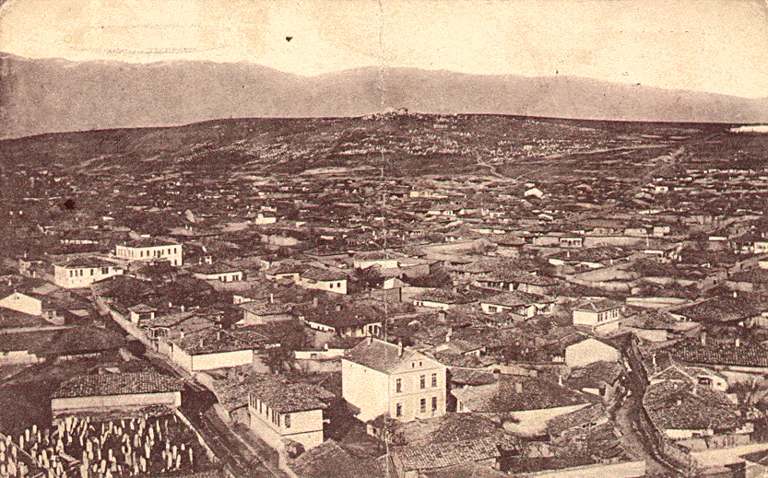
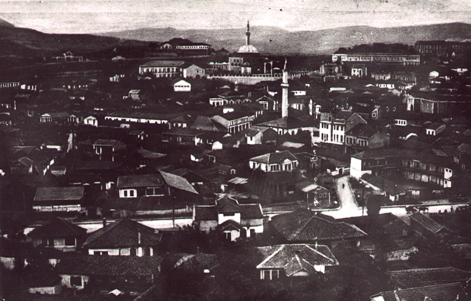
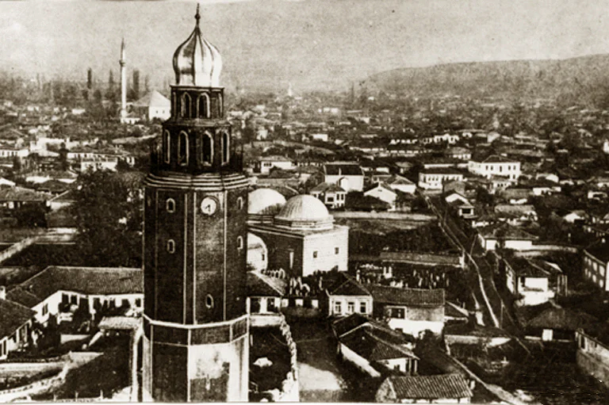
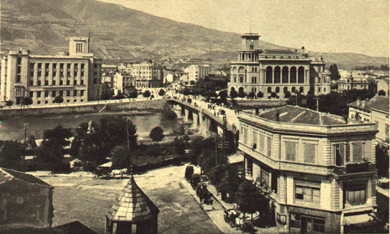
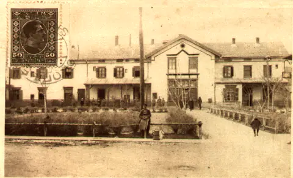

Skopje 1916 - 1917 panorama 2
Documents des guerres balkaniques
- Année
- 1916-1917
- Durée
- 00:12

Skopje à la fin du XIXe siècle. Vue des terrains non bâtis du nouveau quartier, sur la rive droite du Vardar. À l'arrière-plan, la forteresse - Kale. À droite, la colline de Gazi Baba.

Fin du XIXe siècle. Les terrains non bâtis de la rive droite du Vardar. Seulement quelques maisons au bord du fleuve. À l'arrière-plan se dresse la forteresse de Skopje - Kale.

Skopje en 1888, photographiée depuis la colline de Gazi Baba vers la forteresse de Skopje - Kale.

Vue de la ville depuis la tour de l'Horloge vers le nord de Skopje et les anciens quartiers turcs et macédoniens. À l'arrière-plan, la colline de Gazi Baba. (fin du XIXe siècle)

Skopje - vue de la vieille ville et de l'ancien bazar. À l'arrière-plan, la mosquée Mustafa Pacha et, à sa droite, la forteresse de Skopje - Kale avec les casernes. Au premier plan, des maisons du quartier de Gazi Baba - fin du XIXe siècle.

Skopje, début du XXe siècle. Vue depuis la tour de l'Horloge sur l'ancien centre public, commerçant et artisanal, avec le bazar. De nouvelles formes architecturales dans le vieux tissu urbain. À l'arrière-plan dominent la mosquée Mustafa Pacha et la forteresse avec ses casernes. En contrebas, la mosquée Pacha Yiğit Bey, la plus ancienne de Skopje (n'existe plus).

Vue depuis la forteresse de Skopje - Kale vers le mont Vodno. Juste sous la Kale, le quartier juif. On voit le Vardar et le pont de pierre, et juste à côté la mosquée Burmali
- début du XXe siècle.

Vue depuis la forteresse de Skopje - Kale vers le mont Vodno. Juste sous la Kale, le quartier juif. On voit le Vardar et le pont de pierre, et juste à côté la mosquée Burmali
- début du XXe siècle.

Vue du quartier juif et de la ville depuis la forteresse de Skopje - Kale. Au premier plan, la synagogue (sans toit). À droite, le pont de pierre - début du XXe siècle.

Vue depuis la forteresse de Skopje - Kale vers le pont de pierre et la mosquée Burmali. On remarquera combien la ville s'étendait peu sur la rive droite du Vardar. La photo date de la fin du XIXe siècle. Tout au fond, la brasserie, qu'on appelait alors la « Birarija ». Au premier plan, une partie du quartier juif.

Vue panoramique du centre-ville à la fin du XIXe siècle. Au milieu, le théâtre turc. Sur la rive droite du Vardar, juste à côté du pont de pierre, on voit la mosquée Burmali.

La photo a été prise depuis les remparts de la forteresse de Skopje - Kale avant la Première Guerre mondiale. Au pied, les maisons du quartier juif, l'école et la synagogue. À gauche, l'église Saint-Démétrius.

Vue panoramique prise depuis la forteresse de Skopje - Kale au début du XXe siècle. Au premier plan, quelques soldats de la caserne. Au pied, les maisons du quartier juif et du quartier Pajko, puis le pont de pierre et, juste à côté, la mosquée Burmali. Plus loin s'étend la ville nouvelle et, au loin, la brasserie.

Vue depuis la forteresse de Skopje - Kale vers les monts Vodno et Kitka. Au centre de la photo, le pont de pierre et, juste à côté, la mosquée Burmali.

Skopje pendant la Première Guerre mondiale. On voit un camp de l'armée serbe près de l'église Sveti Spas, dont le clocher apparaît à l'arrière-plan.

Panorama de Skopje - années 1920. Au pied, le quartier juif avec l'école et la synagogue. On voit la construction du Théâtre national.

Image panoramique de Skopje (vers 1920). Il est intéressant d'y voir le mont Vodno, ou plutôt sa « nudité », alors qu'il est aujourd'hui couvert de belles forêts. Le reboisement a été fait après la Seconde Guerre mondiale par des actions de jeunesse organisées. Au premier plan, le quartier juif avec la synagogue et l'école juive.

Vue de Skopje depuis la forteresse de Skopje - Kale. Au premier plan, le quartier juif avec la synagogue, l'école et le Théâtre national. À gauche de la photo, le pont de pierre et le Cercle des officiers en construction - années 1920.

Skopje, années 1920. Vue depuis la forteresse de Skopje - Kale sur le quartier juif.

Photo panoramique de Skopje depuis Gazi Baba vers la forteresse de Skopje - Kale. (début du XXe siècle)

La mosquée Mustafa Pacha à l'arrière-plan et, en contrebas, une partie de la mosquée Pacha Yiğit Bey, la plus ancienne de Skopje. (n'existe plus)

Vue de Skopje depuis Gazi Baba. Au premier plan, le tissu serré des quartiers d'habitation. À l'arrière-plan, la mosquée Mustafa Pacha et les casernes au sud et au nord de la forteresse - Kale.

Vue de la vieille ville sur la rive gauche du Vardar. Au premier plan, des maisons particulières. Au centre, l'ensemble de l'ancien bazar de Skopje. À l'arrière-plan domine la mosquée Mustafa Pacha et, derrière elle, la prison et les casernes de la Kale. Sous la mosquée Mustafa Pacha, la mosquée Pacha Yiğit Bey, la plus ancienne de Skopje (n'existe plus). (années 1920)

Panorama de l'ancien tissu urbain, transformé par l'européanisation et la construction d'édifices aux caractères classiques, éclectiques et autres. La photo a été prise depuis la tour de l'Horloge vers la mosquée Mustafa Pacha. À droite, la forteresse de Skopje - Kale avec les casernes - années 1920.

Čair - un vieux quartier de la ville (l'actuelle commune de Čair). Au premier plan, la mosquée Gazi Isa Bey et, à l'arrière-plan, la mosquée Yahya Pacha. - vers 1920

Panorama de Skopje - la rive gauche avec le quartier de Čair et une partie de Gazi Baba. Au premier plan, la mosquée Gazi Isa Bey ; à l'arrière-plan, la mosquée Yahya Pacha. (années 1920)

La tour de l'Horloge - construite en 1566-72. À l'arrière-plan, les mosquées Gazi Isa Bey et Yahya Pacha - années 1920.

Panorama de la vieille ville, vers Gazi Baba. Vue depuis la forteresse de Skopje - Kale. Tout à droite, la mosquée du sultan Murad et, à sa gauche, la tour de l'Horloge. Dans le même alignement à gauche, la mosquée Gazi Isa Bey - années 1920.

Vue panoramique du centre-ville. - années 1920.

Paysage d'hiver au centre de la ville. Au premier plan, des constructions anarchiques, remplacées plus tard par la Banque nationale. La terrasse visible est un cinéma d'été : les deux poteaux au bout tiennent l'écran, et l'espace vide accueillait les chaises des spectateurs. En haut à gauche, la forteresse de Skopje - Kale. (années 1920)

Vue aérienne du centre (vers 1928). Dominent le Cercle des officiers, le pont de pierre, le Théâtre national et le quartier juif. En amont, le pont de bois menant au Théâtre national. En haut à droite, une partie de la Kale. Au premier plan, une partie du quartier de Novo Maalo. La photo a été prise en été, car le fleuve est très bas.

Vue aérienne du centre (vers 1928). Dominent le Cercle des officiers, le pont de pierre, le Théâtre national et le quartier juif. En amont, le pont de bois menant au Théâtre national. En haut à droite, une partie de la Kale. Au premier plan, une partie du quartier de Novo Maalo. La photo a été prise en été, car le fleuve est très bas.

Photo aérienne panoramique de Skopje. On voit surtout la rive droite du Vardar, dominée par le Cercle des officiers. À droite, le palais Ristić. Devant lui, la place avec un espace vert aménagé au centre. On remarque aussi les calèches, dont la place était la principale station. Le pont de pierre relie les deux rives. En bas à droite, le Théâtre national - un superbe édifice que regrettent bien des anciens de Skopje.

Vue panoramique de la partie gauche de la ville avec le pont de pierre et les quartiers : à gauche le quartier juif, à droite le quartier Pajko. À droite du pont, le monument aux morts des guerres balkaniques, devant la Banque ottomane. À l'arrière-plan, des mosquées, la tour de l'Horloge et les quartiers de Čair et Gazi Baba. (années 1920)

Vue panoramique de Skopje, plus précisément du quai gauche du Vardar avec une partie du quartier juif, le quartier Pajko et le pont de pierre. (années 1920)

Vue du pont de pierre depuis la tour du Cercle des officiers. Juste à droite du pont se trouvait le cabinet du dentiste Dr Ruben. Un peu plus à droite, la Banque ottomane. Entre les deux, une petite place avec une station de calèches. Au milieu de la place se dressait le monument aux combattants tombés - vers 1927.

Vue du pont de pierre depuis la tour du Cercle des officiers. Juste à droite du pont se trouvaient le cabinet du dentiste Dr Ruben et la Banque agricole. À droite, la Banque ottomane. Entre les deux, une petite place avec une station de calèches. Au milieu se dressait le monument aux morts des guerres balkaniques - vers 1927.

Vue du pont de pierre depuis la tour du Cercle des officiers. Juste à droite du pont se trouvait le cabinet du dentiste Dr Ruben. Un peu plus à droite, la Banque ottomane. Entre les deux, une petite place avec une station de calèches. Au milieu de la place se dressait le monument aux combattants tombés - vers 1927.

Vue vers le pont de pierre sur le Vardar et une partie de la rive gauche, c'est-à-dire le quartier Pajko, depuis la tour du Cercle des officiers. Juste à droite du pont se trouvait le cabinet du dentiste Dr Rubens. À droite, la Banque ottomane. Entre les deux, une petite place avec une station de calèches. Au milieu se dressait le monument aux morts des guerres balkaniques - vers 1927.

Vue panoramique - le pont de pierre, avec la forteresse de Skopje - Kale à l'arrière-plan et le quartier juif - années 1920.
.

Skopje après 1930. À gauche, la Banque nationale ; à droite, le Cercle des officiers. Au premier plan, une partie du minaret de la mosquée Ibni Pajko et la maison du dentiste Dr Ruben. Sur la petite place, il y avait une boulangerie aux meilleurs simits de Skopje et une station de calèches.

Vue du Vardar avec la forteresse de Skopje - Kale ; à droite, on devine la ville. On voit le Cercle des officiers et la Banque nationale. - années 1930

Une superbe photo de la ville et du cours du Vardar. À gauche, la forteresse de Skopje - Kale. Au centre, le Cercle des officiers et la Banque nationale. À droite, le mont Vodno et, au loin, la silhouette de la Kitka. - années 1930

Une superbe vue du cours du Vardar avec le mont Vodno et le quartier Bunjakovec. On voit le Cercle des officiers et la Banque nationale. (années 1930)

Vue du quartier Bunjakovec - années 1930, avec une partie du parc municipal à droite de la photo.

Une partie du nouveau quartier de Bunjakovec dans les années 1920. On voit des maisons à un étage d'une architecture modeste.

Vue du quartier Bunjakovec, années 1930.

Aspect du quartier de Bunjakovec, aujourd'hui situé dans le centre-ville. On voit une rangée d'immeubles construits selon le plan d'urbanisme du quartier.

Un magnifique paysage d'hiver panoramique. La photo a été prise depuis la forteresse de Skopje - Kale vers le mont Vodno. Au centre droit, le Cercle des officiers et la Chambre de commerce.

Vue du pont de pierre sur le Vardar. De l'autre côté du fleuve : à gauche la Banque nationale, à droite le Cercle des officiers.

Panorama de Skopje - photographié depuis la forteresse de Skopje - Kale. Deux bâtiments dominent : à droite le Cercle des officiers, à gauche la Banque nationale. Au premier plan, le quartier juif. (années 1930)

Vue aérienne du centre de la ville. On y voit la place avec le Cercle des officiers et la Banque nationale. Plus haut, le Théâtre national et la passerelle en bois.

Vue aérienne de la ville. On y voit la place avec le Cercle des officiers, la Banque nationale, la Chambre de commerce, les quartiers juif et Pajko, et le pont de pierre. En haut à gauche, toute la forteresse - Kale avec la caserne. À côté, la mosquée Mustafa Pacha et, à l'arrière-plan, la silhouette de la mosquée Yahya Pacha.

Vue aérienne de la cathédrale de la Sainte-Vierge à Skopje, érigée en 1835 (au centre, avec un haut clocher), et de l'église Saint-Mina de 1902 (à gauche, à deux clochers). Autour, le quartier Pajko.

Skopje, années 1930. La vieille ville. Vue à travers la fenêtre grillagée d'un vieux bâtiment turc.

Panorama de la ville. Tout à gauche, la mosquée du sultan Murad et, à sa droite, la tour de l'Horloge. Tout à droite, la mosquée Gazi Isa Bey. À l'arrière-plan, la Banque nationale et le Cercle des officiers, et au-delà s'élève le mont Vodno. (années 1930)

Panorama de la ville. À l'arrière-plan, la mosquée du sultan Murad et, à sa droite, la tour de l'Horloge. Tout à droite, la mosquée Gazi Isa Bey. Au fond, la Banque nationale et le Cercle des officiers. (années 1930)

Vue aérienne de la ville. En bas, le pont de pierre et le Cercle des officiers. En amont, la passerelle en bois menant au Théâtre national et au quartier juif. En haut, la forteresse de Skopje - Kale avec la caserne. Photo prise le 26 juin 1933 à 10 heures du matin.

Un terrain vague devant l'actuel musée de la ville de Skopje. À gauche, les hôtels « Bristol » et « Roi de Serbie », dans la rue principale qui mène à la place. Dans la même rue, au centre de la photo, le palais Krang. (années 1930)

Vue aérienne de la place. Au premier plan, la Banque nationale vue de derrière et, à sa droite, la Chambre de commerce. En face de la Banque nationale, le Cercle des officiers. À droite, le Vardar et une partie du pont de pierre. En amont, le pont de bois menant au Théâtre national, visible lui aussi en haut à droite de la photo.

Documents des guerres balkaniques
 Aqueduc4 cartes postales
Aqueduc4 cartes postales Kale30 cartes postales
Kale30 cartes postales Ponts60 cartes postales
Ponts60 cartes postales Quai58 cartes postales
Quai58 cartes postales Place46 cartes postales
Place46 cartes postales Édifices66 cartes postales
Édifices66 cartes postales Églises chrétiennes19 cartes postales
Églises chrétiennes19 cartes postales Édifices musulmans33 cartes postales
Édifices musulmans33 cartes postales Cercle des officiers29 cartes postales
Cercle des officiers29 cartes postales Théâtre28 cartes postales
Théâtre28 cartes postales
Gare ferroviaire13 cartes postales Écoles36 cartes postales
Écoles36 cartes postales Parcs12 cartes postales
Parcs12 cartes postales Marchés18 cartes postales
Marchés18 cartes postales Rues38 cartes postales
Rues38 cartes postales Panorama I60 cartes postales
Panorama I60 cartes postales Panorama II30 cartes postales
Panorama II30 cartes postales Collages55 cartes postales
Collages55 cartes postales Inondations9 cartes postales
Inondations9 cartes postales Séisme27 cartes postales
Séisme27 cartes postales Skopje 200026 cartes postales
Skopje 200026 cartes postales